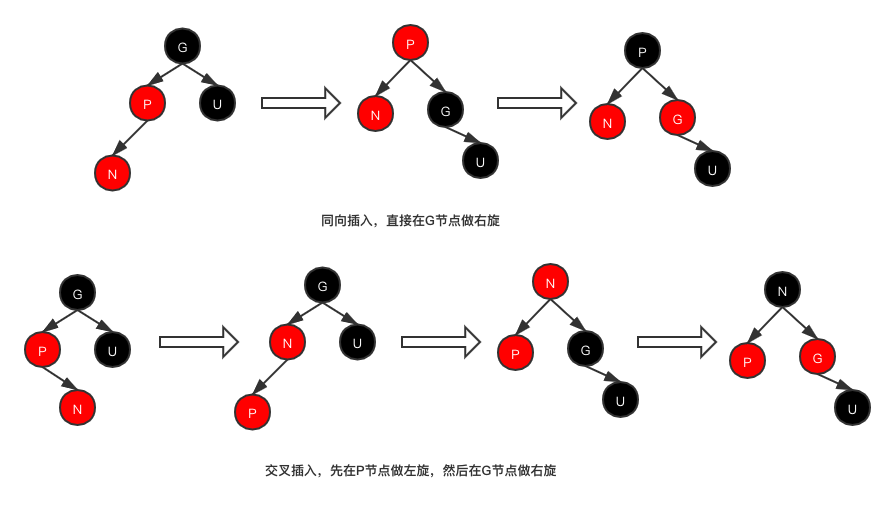
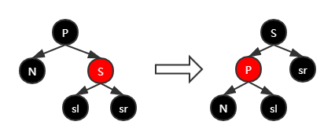
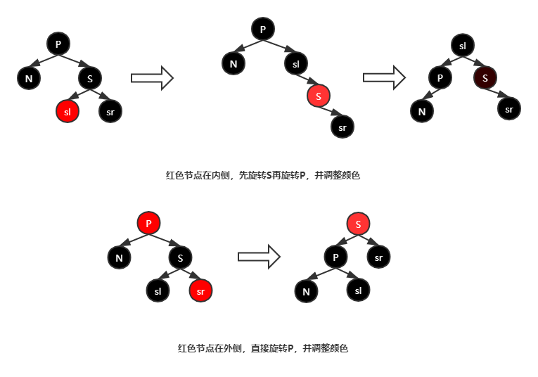
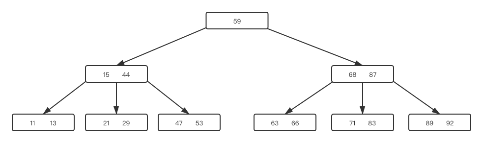
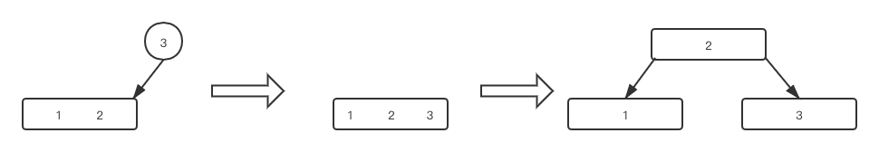

综述
分治思想是算法领域非常重要和常见的思路，而几乎所有的分治算法都可以转换成一颗树的结构。在查询问题中，这种树则一般被称为查找树。
查找树的优点在于查询效率较高，以二叉树为例，其平均时间复杂度为O(logn)，在查询海量数据时也可以拥有很不错的查询速度。
本章将会通过一步步的演进来详细阐述当前常见的几种查找树及其实现。包括普通二叉树，平衡二叉树，红黑树，B-TREE等。
树的搜索是一件很简单的事情，不论树的结构如何演进，搜索的方式都基本是一致的，不同的树，其差异主要在于树的构建过程，如何高效的构建出一个适合查找的树，才是查找树研究的重点
二叉树
二叉树的本质和二分查找是相同的。一棵理想的二叉树如下图所示：
可以看到，树中的节点与数组中的元素其实是一一对应的，当我们从根节点开始查找元素，其顺序与我们在数组上使用二分查找是一样的。
构建
构建一个二叉树也很简单，只要依照查找的顺序，依次在空位添加子节点即可，用代码实现如下：
1 | /* |
二叉树的构建其实也是一种优化过的插入排序的过程，我们对一个数组进行任意的混淆，最后构建二叉树，对该树进行中序遍历，就可以得到一个已经排好序的有序数组。
1 | public static void main(String[] args) { |
至此，我们其实可以看出，查找树的根本原理，首先是将所有的数据组成有序的结构，然后在这个有序结构上利用分治查找来提高查找效率。
删除节点
二叉树中删除一个节点n，有多种情况：
- n是叶子节点，直接删除即可
- n只有左、右子树，则将左、右子树根节点替换n
- n同时有左右子树，用右子树最小节点m（最左叶子节点）替换n，并且m继承n的左右子树
二叉树虽然看起来很美好，但是存在着一个致命的问题：树结构的不平衡。这是由二叉树的构建过程决定的，构建的输入越有序，二叉树的查找效率反而越低。在极端情况下，假设输入是一个有序数列，那么二叉树就会退化成一个链表，查找则退化成了顺序查找。
所以为了提高二叉树的搜索效率，我们必须尽量让构建出来的二叉树符合本节一开始图中所示的那种样子。即左右子树的节点深度尽量相同，这种理想二叉树就是平衡二叉树
平衡二叉树与AVL树
首先，来了解一下相关的定义：
1 | 平衡树，是指任意节点的子树的高度差都小于等于1。 |
AVL树的插入与二叉树是一样的，但是重点在于插入之后，如果当前二叉树不是平衡二叉树，则会进行一次旋转操作，使树保持平衡。而如何进行旋转，是AVL树的灵魂。
在一棵平衡的二叉树上，连续向一颗子树下增加两次深度，就会造成原本二叉树的不平衡。例如现在有节点N，那么现在向N的左子树增加一个节点L,再向L的左子树增加一个节点LL，现在N的左右子树深度差超过了1(左2右0），就不再是平衡二叉树。以下将这种插入情况就称为左左插入。
根据简单的统计知识我们可以知道插入一共有四种情况：左左、右右、左右、右左。而实际上由于镜像的原因，本质上只有两种情况：
- 同向插入，左左和右右。
- 交叉插入，左右和右左。
而在AVL树种，有两种旋转方式：单旋和双旋，就分别对应这两种情况。
单旋
单旋是用来解决同向插入导致的不平衡场景，下面来看单旋的示意图：

对于单旋来说，解决问题主要在于子树的交换。因为原本的根节点n要在新的根节点l或r上占据一个子节点的位置。那么原本占据这个位置的子节点（子树）就要挂在n因为拆掉了l或r而空出的位置上。
这就是图中中间部分的红线和虚线表示出的交换过程，在断开根节点和子树的连接后，虚线的部分是要新增的连接，红线的部分是要删除的连接。
以图中右右插入为例，我们要将n节点接在r的左子树上，但是r的左子树已经有一个rl了，两个节点肯定就会有冲突。这时候因为r节点被提起来了，所以n节点的右子树正好空出来了，于是就可以把rl节点接在n节点的右子树上，以解决上面遇到的冲突问题。
双旋
在交叉插入的情况下，使用单旋并不能解决不平衡的问题，就需要使用双旋。
双旋的思路很简单，以左右插入为例。首先不平衡的原因在于：最深的叶子节点位于左子树的右子树位置，即使进行右旋，这个节点变成了右子树的左子树，它的深度也不会改变。
那么要解决这个问题，只要让最深的叶子节点移动到左子树的左子树位置就可以了，也就是将左右插入变形为左左插入。而要达到这个目标，只要在左子树上进行一次左旋即可。
具体过程如上图所示，可以看到，相比于单旋，双旋只在第一步进行了一次旋转，后续的步骤和单旋是完全相同的。而要记忆也很简单：左右插入就做左右旋，右左插入就做右左旋。
在理解了最基础的旋转操作之后，下面就是在AVL树中的具体应用，为了实现平衡，AVL树中有两个重要的递归式操作：更新高度 和重平衡
更新高度
首先我们规定一个空节点的高度为0，一个叶子节点的高度为1，那么更新单个节点高度是很简单的，节点n的高度为：n.height = max(n.left.height, n.right.height) + 1
而这个公式也同时限定了更新高度的操作必须是从底向上的。所幸在插入操作时，我们新插入的节点必然是最底层的叶子节点，所以只要从新插入的节点n开始向上递归即可更新整棵树的高度信息：
1 | /* |
而在实际操作中，其实只有在删除节点的情况下才需要单独进行完整的高度更新。而插入节点的时候，更新高度往往是和重平衡操作同步进行的。
重平衡
首先我们定义什么叫平衡和平衡因子：对于根节点为n的子树来说，平衡因子b = n.right.height-n.left.height, 平衡意味着 abs(b) < 2
由于AVL树的特性，我们在插入过程中不可能遇到b>2的情况，因为出现这种情况就意味着这棵树在进行插入之前就是不平衡的，应当先进行平衡再插入。
所以不平衡的情况有两种：b=2和b=-2，
当b=2时，意味着树的右子树过深，说明本次插入是在右子树的左、右节点上进行的，需要进行左旋或者右左旋。
当b=-2时，意味着树的左子树过深，说明本次插入是在左子树的左、右节点上进行的，需要进行右旋或者左右旋。
具体需要进行单旋和双旋，就需要根据具体的插入位置来进行判断。这里的判断有一个小技巧：新插入的导致不平衡的节点，它的父节点必然只有它一个子节点，而另一个位置是null。所以只要判断哪边是null，就可以知道是同向插入还是交叉插入了。
最后是和更新高度操作的融合。这里有一个规律：进行平衡后的子树，它的根节点n的高度和插入之前是相同的，因而n之上的所有父辈节点的高度都是不变的。
所以在插入新节点时，更新高度的操作其实是从新插入的叶子节点开始，到需要进行重平衡的节点（或根节点）为止的。所以在进行重平衡操作之后即可跳出递归，不必再继续向上遍历。
伪代码如下：
1 | while (node != null) { |
删除
AVL树和普通二叉树的删除过程是相同的，差异只是在删除之后，需要重新进行一下自底向上的高度更新，然后进行一次重平衡流程即可。
AVL树有着很优秀的统计性能，在最坏的情况下也能保证O(logn)的查找效率。但是AVL树的缺点也很明显：为了保持树的平衡，需要进行大量的旋转和检测。导致树的插入效率受到了较大影响。而在实际应用中，我们往往不需要这么严格平衡的二叉树，却需要更高的插入效率。为了解决这个问题，人们又发明了广泛应用于生产实践的红黑树。
红黑树
红黑树，顾名思义，其节点分为红色和黑色两种标记。并且在红黑树中将空节点视为黑色。红黑树的具体要求有以下五条：
- 节点只有红色和黑色
- 根节点永远是黑色
- 空节点都是黑色
- 每个红色节点必须有两个黑色的子节点（红色节点的父节点不能是红色）
- 从任意节点到每个叶子的所有简单路径都包含相同数目的黑色节点（注意叶子是指空节点，也算一个黑色）
红黑树的特点是由第五条保证的，在极端情况下，最长路径和最短路径的长度差距不会超过一倍。也就是一条路径上全是黑色，另一条路径上全是红黑相间。这种性质保证了红黑树的平均查询效率也可以达到O(logn)。
不过简单来说，不作学术分析，前三条基本是废话，第五条照着做就行了，我们唯一需要关心的就是第四条的情况，即两个红色节点不能相邻。
插入修正
首先我们设定新插入的节点N的颜色永远是红色。其实就是这个设定，最终保证了红黑树的第五条特性。
在对红黑树进行修正的时候，我们需要关心新节点N，父节点P，祖父节点G和叔父节点U四个位置。
很显然的，先排除2种特殊情况：
- N是根节点，直接置为黑色
- P是根节点，那么N是红色P是黑色，必然不会出错，直接跳过。
然后排除一种正常情况：
- P是黑色，则没有问题，不需要处理。
然后，我们来看普遍情况下的两种破坏红黑树规则的情况：
1、父节点和叔父节点都是红色节点
这种情况，其实不是树不平衡，而是颜色涂错了。
此时，祖父，父，子三层节点的颜色依次是黑、红、红。那么想要让它们符合红黑树的要求，只要让颜色变成红、黑、红即可，即将父节点置为黑色，将祖父节点置为红色。然后再从祖父节点依次向上递归进行修正即可。如果祖父节点是根节点，最后还要将祖父节点设置为黑色，三层依次为黑、黑、红也是符合红黑树的要求的。

2、父节点是红色，叔父节点是黑色
这种情况其实才是和AVL树中的不平衡情况对应的，只要和AVL树一样进行旋转，再调整颜色就可以了。
此处回想AVL树中的旋转，分为单旋和双旋，在AVL中也是一样的：同向插入时可以使用单旋实现调整，交叉插入时可以使用双旋实现调整。然后改变P节点和G节点的颜色，就可以令整个红黑树符合规范。

出于保险起见，可以在调整的最后无论什么情况都将根节点置为黑色。以保证满足红黑树“根节点是黑色”的要求。
删除修正
红黑树的删除要比插入更复杂一点。
首先我们假设要删除及删除后要替换上节点都是N，（也就是要删除的这个位置就是N，不管是哪个节点）下面是三种替换的情况：
- N的左右子节点均不为空，则使用右子树最小值替换N的值，然后删除右子树最小值对应的节点
- N的颜色为红色，则使用子节点替换N节点即可
- N的颜色为黑色，且N的子节点颜色为红色，则将子节点颜色置为黑色，然后替换N节点即可。
最大的麻烦在后面：当N节点和子节点都为黑色时，我们同样首先替换N节点，但是之后需要对树进行修复，也就是又要面临各种情况的折磨了……
同样的，我们需要定义：N的父节点为P， 兄弟节点为S。 当N是根节点时，不需要做任何处理。在其它情况下则需要进行各种处理。
1、兄弟节点为红色
此时，如果N是左节点则进行左旋，N是右节点则进行右旋。然后交换S和P的颜色。
因为S是红色，所以S的子节点必然都是黑色。旋转后，N有了一个红色的父节点和一个黑色的兄弟节点。

完成转换后，N节点的情况会符合后续的情况，递归调用修复即可。
2、父节点、兄弟节点和兄弟节点的子节点都是黑色
此时将兄弟节点S置为红色即可。
这是因为N所在的路径上删除了一个原本存在的节点，所有使得本侧路径通过的黑色节点少了一个。将S置为红色后S所在的路径和N所在的路径的黑色节点数量就相等了。
完成调整后需要在父节点P上递归调用修复。
3、父节点是红色，兄弟节点和兄弟节点的子节点都是黑色
此时调换父节点和兄弟节点的颜色即可。
此时的情况同样是因为S侧的路径上黑节点多于N侧，交换颜色后，S侧路径上的黑节点数量不变，N侧的黑节点数量增加了1（即父节点被设为黑色）。达到平衡。
4、兄弟节点是黑色，兄弟节点的子节点有红色
这种情况又再次接近于AVL树的单旋和双旋情况。
首先我们定义兄弟节点的“外侧”子节点，即若S节点为P节点的右节点，则外侧子节点为S的右侧子节点，同理，若S为P的左子节点，则外侧子节点为S的左节点。对应的S的另一个子节点为“内侧”子节点。
若外侧子节点不为红，则S的内侧子节点必为红。此时需要对S节点上进行旋转，并交换S和内侧子节点的颜色。使得红色节点转移到外侧。（双旋）即可满足下面的条件：
当外侧子节点为红色时，则在P节点上进行旋转并交换S和P的颜色，并将S的外侧红色子节点置为黑色即可。（单旋）

小结
到这里，关于常用的二叉搜索树的实现就基本完成了。在二叉搜索树的实现中，树的修复是一件很麻烦的事情，建议有耐心的同学按照wiki百科上关于不同树的各种情况下修复和旋转的描述，依次自行实现一遍，对于树的构建会有更为深入的理解。
B-Tree 与 B+Tree
我们之前讲的查找树都是二叉树。二叉树的结构简单，但是当数据量大的时候，高度增长也会很快。这个缺点在内存操作的时候问题不大，因为内存的随机读写性能非常好。但是在磁盘操作时，对于性能的影响就体现出来了。过高的树结构带来大量的随机读写，对于磁盘来说是一件很耗时的事情。
所以在数据库中，最常用的查找树是多路查找树，其中最常见的实现就是B-Tree与B+Tree，大部分传统结构化数据库都是用B+Tree，也有诸如MongoDb等数据库是采用B树组织索引。其优点在于可以大幅度降低树的高度，减少随机IO的读写。
B-Tree
这玩意叫B树，不是B减树
B树与二叉树的最大区别，就在于B树是多路查找树，而二叉树只是二分查找。即B树的每个节点最多可以有N个子节点，这个子节点的数量N又被称为B树的“阶”，显然的，B树的阶越大，则树越矮。
一个典型的三阶的B树如下图所示：

这棵树中有17个元素，如果用二叉树，这棵树的高度会有6层，而使用三阶B树，则只需要三层，随着数据量的增大，B树层级更低的特征会越发明显。
B树的构建
之前二叉树的构建都是自顶向下的构建，首先构建一个根节点，然后逐层增加子节点。B树的构建则与之不同，是自底向上的构建。
向B树中插入一个新节点，包括三个步骤：
1、 查询应当插入的节点，代码如下：
1 | BNode node = root; |
2、 在该节点的有序位置插入值，代码略
3、 判断，若该节点的值数量>=树的阶数，则该节点需要分裂。并递归判断父节点
1 | // 出于省略，本部分为伪代码，不可直接执行 |
一个三阶B树分裂的过程如图所示：

B+Tree
在数据库索引的场景下，B树有两个问题：
- 虽然有较好的查找性能，但是当我们需要依次遍历数据的时候，就比较麻烦了。
- 数据与树结构混在一起。导致存储需要更多的磁盘空间。
为了解决这个问题，B+树应运而生。B+树是对B树的一个演进，可以说是为了磁盘存取而特化的B树。B+树有两个特点：
- 叶子节点之间使用链表的形式进行连接，可以很方便的顺序读取数据。
- 非叶子节点只保存索引而不保存数据。每个磁盘页可以保存更多的索引信息
与上面的B树案例对应，B+树的形式如下图所示

B+树的构建过程与B树类似，同样是自底向上的构建过程，但是有两点需要注意：
1、 在分裂节点时，中间的索引同样要保留在子节点中，推到父节点中的数值是一个复制。因为在B+树中，子节点必须保留有整颗树中的全部索引信息。
2、 在构建树的过程中需要同步维护一个叶子节点的链表结构，就是在每次插入时需要在对应的链表位置进行一次插入。
小结
查找树是非常实用和常见的一种结构，比如在数据库的存储应用的B+树，在Java中HashMap的数据存储应用的红黑树等。本文仅对常见的几种查找树进行了简单的介绍和实现。希望大家能够有所“建树”~